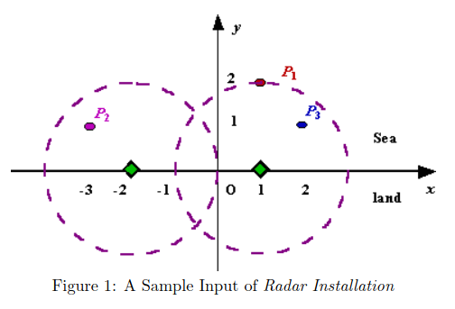

class: center, title-slide <br><br> ## CSCI-UA 480: APS ## Algorithmic Problem Solving <br/><br/><br/><br/><br/><br/><br/> ## Greedy Algorithms .author[ Instructor: Joanna Klukowska <br> ] .license[ Copyright 2020 Joanna Klukowska. Unless noted otherwise all content is released under a <br> [Creative Commons Attribution-ShareAlike 4.0 International License](https://creativecommons.org/licenses/by-sa/4.0/).<br> Background image by Stewart Weiss<br>] --- layout:true template: default name: section class: inverse, middle, center --- layout:true template: default name: challenge class: challenge --- layout:true template: default name: poll class: inverse, full-height, center, middle --- layout:true template: default name: breakout class: breakout --- layout:true template:default name:slide class: slide .bottom-left[© Joanna Klukowska. CC-BY-SA.] --- ## Greedy - solving problems by making locally (at each step) optimal choices with the hope of obtaining optimal solution overall - when does it work - problem has optimal sub-structure: optimal solution for the problem contains optimal solutions for sub-problems - problem has a greedy property: optimal choices made at the moment lead to otpimal overall solution (no need to go back and explore an alternative) - examples --- class:challenge ## Challenge: Making Change __Task__ Given an amount V (in cents) and a list of denominations of n coins find the way to make the change with the minimum number of coins. Assume that you have unlimited supply of each coin (for each given denomination). --- class:challenge ## Challenge: Making Change __Example__ - n = 4 - denominations = {25, 10, 5, 1} cents - desired amount V = 47 cents solution: - start with the largest denomination and use as many coins as possible<br> 47 - 25 = 22 - use the next highest denomination <br> 22 - 10 = 12 <br> 12 - 10 = 2 <br> - the remaining amount is too small for the denomination of 5, so skip it - use the last denomination <br> 2 - 1 = 1 <br> 2 - 1 = 0 <br> so we need 5 coins: 25, 10, 10, 1, 1 --- ## Challenge: Making Change This problem posseses both characteristics that make the greedy solution applicable here: - the solutions to its subproblems are optimal, for example - for 22 cents, the otpimal solution would be 4 coins: {10, 10, 1, 1} - for 12 cents, the optimal solution would be 3 coins: {10, 1, 1} - the solution has a greedy property: we use the largest possible coin first, if we used a smaller one instead, we would have to replace that coin with more than one coin in the alternative solution. -- _Note_<br> This approach does not work for all denominations. It does work for American coins of {25, 10, 5, 1} cents. --- class:challenge ## Computing Center Load Balancing You are an operator of a super computing center and in control of M nodes. One day, a research institute from Light Kingdom submitted N computational tasks. Given the computational power needed for each task, you are to distribute the tasks among the available nodes. Restriction: every node can process up to two tasks. You also want to distribute the workload as evenly as possible, i.e. minimize the following imbalance value $$Imbalance = \sum_{i=0}^{M-1}{|Avg-Load_i|} $$ where $Avg$ is average load per node and $Load_i$ is the load of the i-th node. __Input__: The first line of the input contains two integers M (1 <= M <= 5) and N (1 <= N <= 2M), indicating the number of nodes you control and the number of tasks, respectively. The second line contains N integers, each of which represents the computational power required for a task. Numbers on this line are between 1 and 1000. __Output__: Print one line `IMBALANCE = I` where `I` is the minimum imbalance value rounded to 5 decimal places. --- ## Computing Center Load Balancing .left-column2[ You are an operator of a super computing center and in control of M nodes. One day, a research institute from Light Kingdom submitted N computational tasks. Given the computational power needed for each task, you are to distribute the tasks among the available nodes. Restriction: every node can process up to two tasks. You also want to distribute the workload as evenly as possible, i.e. minimize the following imbalance value $$Imbalance = \sum_{i=0}^{M-1}{|Avg-Load_i|} $$ where $Avg$ is average load per node and $Load_i$ is the load of the i-th node. ] -- .right-column2[ __Example 1__ ``` Input: 2 3 6 3 8 Output: IMBALANCE = 1.00000 ``` __Example 2__ ``` Input: 3 5 51 19 27 14 33 Output: IMBALANCE = 6.00000 ``` __Example 3__ ``` Input: 5 9 1 2 3 5 7 11 13 17 19 Output: IMBALANCE = 11.60000 ``` ] --- ## Computing Center Load Balancing .left-column2[ You are an operator of a super computing center and in control of M nodes. One day, a research institute from Light Kingdom submitted N computational tasks. Given the computational power needed for each task, you are to distribute the tasks among the available nodes. Restriction: every node can process up to two tasks. You also want to distribute the workload as evenly as possible, i.e. minimize the following imbalance value $$Imbalance = \sum_{i=0}^{M-1}{|Avg-Load_i|} $$ where $Avg$ is average load per node and $Load_i$ is the load of the i-th node. ] .right-column2[ __Observation 1__: If there is an empty computing node in the final solution, than it is always beneficial (in the sense that the new solution is not worse than the original) to move one task from a computing node with two tasks to the empty one. Otherwise, the empty computing node contributes more to the imbalance than the alternative assignment. __Observation 2__: If N > M, then N-M tasks must be scheduled on computing nodes that already contain other tasks. ] --- ## [Radar Installation](https://onlinejudge.org/external/11/1193.pdf) - __Given__: - a set of islands (points) in the sea (`y > 0`, `x` unrestricted) - a radar range `d`. - __Constraint__: Radars must be placed on the coast (the x-axis). - __Coverage__: A radar covers any island within distance d. - __Objective__: Find the minimum number of radars needed to cover all islands. - __Output__: Report the minimum count, or -1 if it's impossible to cover all islands. -- .left-column2[ __Example__ d = 2 islands: (-3, 1), (1,2), (2,1) ] .right-column2[  ] --- ## [Radar Installation](https://onlinejudge.org/external/11/1193.pdf) __Idea__ - For each island, we compute the interval of possible radar positions: [xi - sqrt(d² - yi²), xi + sqrt(d² - yi²)]. - By always placing the radar at the rightmost possible position that still covers the current island, we ensure it covers as many subsequent islands as possible — this is a greedy strategy. --- ## [Radar Installation](https://onlinejudge.org/external/11/1193.pdf) - Algorithm (Take 1) __Given:__ `d`: maximum distance a radar can cover `islands`: array of points `(x, y)` -- __Initialization and setup:__ sort the `islands` array by the `x` coordinate from smallest to largest `radar_count = 0` the count of installed radars `lastRadarX = -∞` the `x`-coordinate of the most recently installed radar --- ## [Radar Installation](https://onlinejudge.org/external/11/1193.pdf) - Algorithm (Take 1) .small[ __Given:__ `d`: maximum distance a radar can cover `islands`: array of points `(x, y)` -- __Initialization and setup:__ sort the `islands` array by the `x` coordinate from smallest to largest `radar_count = 0` the count of installed radars `lastRadarX = -∞` the `x`-coordinate of the most recently installed radar ] __Compute the number of radars__ ``` for each island (xi, yi) in islands: //check if the island can be covered by any radar at all if yi > d, it is impossible to cover this island, return -1 //check if the island is already covered by the current radar //(i.e., does it lie within the last radar's coverage area) if xi <= lastRadarX + sqrt(d^2 - yi^2) continue, no need to add another radar //otherwise, install a new radar at the rightmost x position where //a radar could be placed to still cover this island radar_count++ lastRadarX = x1 + sqrt(d^2 - yi^2) return radar_count ``` --- ## [Radar Installation](https://onlinejudge.org/external/11/1193.pdf) - Algorithm (Take 1) .big[WARNING!!! <br>The algorithm we just went over, does not work in all cases!!! ] -- Can you think of a scenario in which it fails to find the minimum number of radars? -- - Assume $d$ (the radar's coverage diameter) is larger than 1 - Two islands with the following coordinates: - $x_1$, $\epsilon$ - $x_1+1$, $d$ The algorithm would place the radar at coordinate $x_1 + d$ (assuming that $\epsilon$ is very small). This radar cannot cover the second island. But if we place a radar at the location $x_1 + 1$, then both islands are covered. --- ## [Minimal Coverage](https://onlinejudge.org/external/100/10020.pdf) - __Given__ - A target line segment `[0, M]` to be covered . - A list of available line segments, each with coordinates `[Li, Ri]`. - __Task__: Find the minimal number of available segments that are needed to completely cover the entire `[0, M]` segment. - __Output__: - The count of the minimal segments used. - The list of those specific segments, sorted by their left coordinate. - If covering `[0, M]` is impossible, output `0`. -- __Intuition__ This is the classic greedy __interval-cover problem__: repeatedly choose the segment that starts at or before the current uncovered point and extends as __far right as possible__. --- ## [Minimal Coverage](https://onlinejudge.org/external/100/10020.pdf) -- Algorithm __Given__ `M` target right endpoint (we need to cover [0,M] `segments` — list of pairs `(Li, Ri)` of segments to work with -- __Preprocess by filter & sort__ - Remove any segment with `R < 0` and segments with `L > M` - they cannot cover any part of the `[0,M]` interval. - Sort segments by `L` ascending (and if equal `L`, by `R` descending). - Sorting by left endpoint lets you scan from the left to right picking segments that can start at or before the current point. -- __Initialize__ `covered = 0.0` - current point covered (we need to advance covered from `0` toward `M` `i = 0` - index into sorted segments `chosen = []` - list of chosen segments (for output) --- ## [Minimal Coverage](https://onlinejudge.org/external/100/10020.pdf) -- Algorithm .left-column2-small[ .small[ __Given__ `M` target right endpoint (we need to cover [0,M] `segments` — list of pairs `(Li, Ri)` of segments to work with __Preprocess by filter & sort__ Remove any segment with `R < 0` and segments with `L > M` - they cannot cover any part of the `[0,M]` interval. Sort segments by `L` ascending (and if equal `L`, by `R` descending). - Sorting by left endpoint lets you scan from the left to right picking segments that can start at or before the current point. __Initialize__ `covered = 0.0` - current point covered (we need to advance covered from `0` toward `M` `i = 0` - index into sorted segments `chosen = []` - list of chosen segments (for output) ] ] .right-column2-large[ __Cover `[0,M]` interval__ ``` while covered < M: bestR = -∞ and bestSegment = None. //consider all segments that befin at or before the current //uncovered point and choose the one that reaches farthest //right while i < len(segments) and segments[i].L <= covered: if segments[i].R > bestR, bestR = segments[i].R bestSegment = segments[i] i ++ if bestR <= covered //no segment found that extends coverage impossible to cover, return 0 otherwise append bestSegment to chosen covered = bestR if covered >= M you have a minimal set in chosen ``` ] --- ## [Minimal Coverage](https://onlinejudge.org/external/100/10020.pdf) -- Algorithm ``` minimal_cover(M, segments): sort segments by L ascending, R descending covered = 0 i = 0 chosen = [] while covered < M: bestR = covered bestSeg = None while i < len(segments) and segments[i].L <= covered: if segments[i].R > bestR: bestR = segments[i].R bestSeg = segments[i] i += 1 if bestSeg is None: return 0 // impossible chosen.append(bestSeg) covered = bestR return chosen ``` --- ## [Radar Installation](https://onlinejudge.org/external/11/1193.pdf) (Take 2) Can we think of the radar problem as the interval covering problem? How? -- - Convert all islands given by ($x_i$, $y_i$) into intervals along the coast ($y = 0$): - left end point $L(x_i) = x_i - \sqrt{d^2 - {y_i}^2}$ - right end point $R(x_i) = x_i + \sqrt{d^2 - {y_i}^2}$ -- - Sort all the invervals __by the right endpoint__! -- - Initialize last placed radar location to $x_R = -\infty$ - Go through the islands in the sorted order - if that island is not yet covered by an existing radar, i.e., if $ \lvert x_i - x_R \rvert > \sqrt{d^2 - y_i^2}$, place a radar at the location corresponding to $R(x_i)$ <!-- Station Balance __Solution__ - If S <= C, then place each specimen in its own chamber. Some chambers might be empty. - If S > C, then - create 2C - S dummy specimens with weight zero - sort 2C specimens (including the dummy ones) - pair the specimens from the beginning and end of the sorted list (i.e., smallest with largest, second smallest with second largest, ... until all are used) and place each pair in a chamber .small[ __Example__ C = 3, S = 4, M = {5, 1, 2, 7} The average weight A = (5+1+2+7)/3 = 5 M with dummy specimens = { 5, 1, 2, 7, 0, 0} sorted M with dummy specimens = {0, 0, 1, 2, 5, 7} Optimal specimens to chamber assignment: C1 = 7 <br> C2 = 5 <br> C3 = 1, 2 <br> Imbalance = | 7 - 5| + |5 - 5| + | 3 - 5| = 4 ] --> </optgroup>